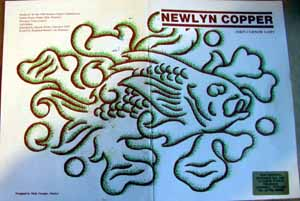

Newlyn Copper has become highly prized not only because of its design but also because of its quality in construction. The influence of John Pearson in the early days showed a deliberate naivety in construction of hinges and structures as a decorative feature but in time this quaint style was replaced by a more precise decorative style. Newlyn pieces are very skillfully constructed, their structures and the rendering of the designs show a precise and yet informal correctness which only the best craftsmen can achieve. In true Arts and Crafts tradition, the construction of Newlyn pieces is exposed as an integral part of the design and adds a decorative quality. Common features are the decorative treatment of hinges and seams and the riveted curved seam on Newlyn cylindrical pieces is a particular trademark of the school. See Newlyn Illustrations.
John Curnow Laity has given us some insight into the craft tradition at Newlyn in his book
Materials Tools and Patterns
The copper sheets came to the industrial classes, in the first instances, in varying sizes, malleability and thickness. Although in early times tin and copper smelting was done in Cornwall and in the Penwith area, the production of rolled Copper sheets had long been the prerogative of the larger and more centralised works in England where coal was plentiful, distances short and transportation comparatively easy.
Although it is romantic to suppose that copper was mined, processed and crafted in and near Newlyn, in fact it came from the Birmingham Mint as far back as can be checked and certainly after the formative years at Newlyn when the precise requirements were known. The sheets on display are four feet by two feet, half hard, Cold rolled and of two different gauges, the thinner one for lighter and small objects, the thicker one for larger and sturdier work.
Receiving the sheet copper in this particular malleable state suited practically all needs and it had by then been assessed that an experienced craftsman could fashion his hammered, embossed or traced tray, vase or bowl etc. to a satisfactory hardness at the finish without need to anneal or toughen the copper during the process. Rarely did I see John Payne Cotton use heat to anneal the copper article upon which he was working. However, larger were used on special occasions the Batten mirror photographed herein demanded more than a four by two' sheet. Also all sorts of copper was used by the various copper workers, especially when it was their hobby and when copper sheeting was hard to get, thinness, thickness, hardness and superficial dirtiness did not deter them.
The Tools
In the process of 'beating' many tools are used. First the snips the large iron shears to cut out the shapes required, straight ones and curved ones according to need. Dividers or scribers, often handmade for the purpose, having been used to 'scribe' the outline circle for a ten inch round tray, curved shears are then taken by the craftsman to cut out the ten inch disc from a copper sheet. Next comes the transfer of a pattern, by use of duplicating paper, on to the copper disc.
The MacKenzie fish pattern printed on the poster advertising this exhibition is a favourite for a ten inch tray, flat or repousse. With this pattern clearly reproduced on the tray the first real skilful operation takes place. The lead block is brought into use, its surface first having been perfectly flattened with a planishing hammer. The copper disc is placed on the lead and with a small, blunt chisel the pattern is carefully chased or engraved into the metal.

Throughout the process the lead is re-flattened and finally the disc itself flattened from the back on a smooth, flat wooden surface. If the pattern is embossed then the tray is restricted in use and cannot serve the purpose of carrying drinks of any kind. However, presuming this disc is to be embossed then an embossing tool, a small chisel shaped instrument with a broader head, its head varying in shape and size considerably according to the particular requirement is used on the back of the disc within the chased lines to start to push up ' repousse' and shape the fish on the front. When the fish shows slightly in relief the tray is turned over to the front again and a back chaser is used to flatten the copper surface immediately surrounding the fish; (this tool is very much like a chasing chisel but has a much blunter and thicker head so that it does not penetrate or indent the copper).
This process is repeated and repeated until the fish is embossed to the satisfaction of the craftsman; then he has accomplished his repousse work on the fish. Continuing to work from the centre, the deepest repousse work being on the fish, he raises by means of the embossing tools the shells, seaweed and air bubbles as required all the time back chasing the disc to keep it flat and to add prominence to the repousse work.
All the repousse work complete, the craftsman uses a small matt surfaced punch, a ball-head punch or a similar tool to decorate, harden and finally flatten the background areas immediately around the repousse work, during which exercise the disc is held face up on a flat metal surface. It is normally sufficient then to complete the decoration of the tray by hammering it on the flattened lead with a highly polished, large metal hammer, always working from the decorations already applied circularly outward to the edge of the tray each hammer mark being made precisely next to its neighbour. The disc is then flattened again carefully on the wooden surface with a planishing hammer to ensure that only the repousse work is risen from the surface.
The next process is to turn up the edge of the tray to provide the traditional curved shape. A circle can be drawn by pencil at the appropriate distance from the edge of the tray to measure the depth to which it is to be turned up and allow for the wiring of the edge. By using a wooden mould, traditionally made from apple tree, and a hide mallet the edge is gradually coaxed up all around, the mould used purely to help shrink the copper together as it is struck on the edges and to expand it on the round of the curve.
After each time around the circumference the tray is placed on a flat surface and straightened to rectify warping and bulging. The action is repeated until the edge is turned up and rounded as required. The flatness of the base of the tray can finally be assured by tapping either the bottom of the curved area inside or outside the tray according to which side the base has bulged.
Next the edge of the tray is carefully filed to ensure it is perfectly level and rubbed down with emery cloth; it can then be finally polished for use.
(Extract from